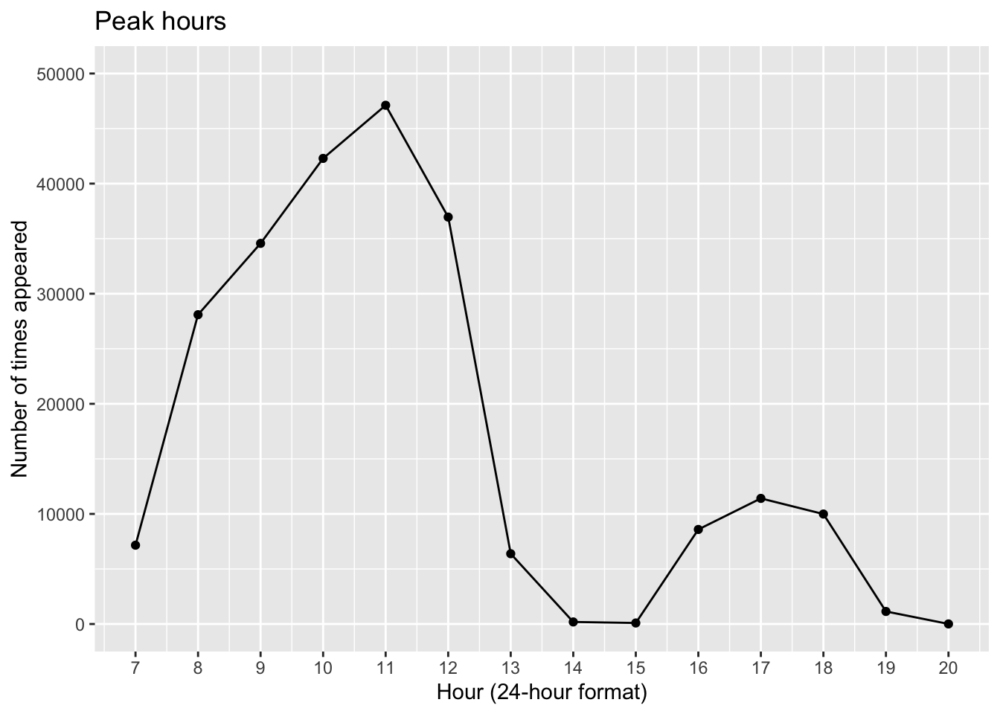
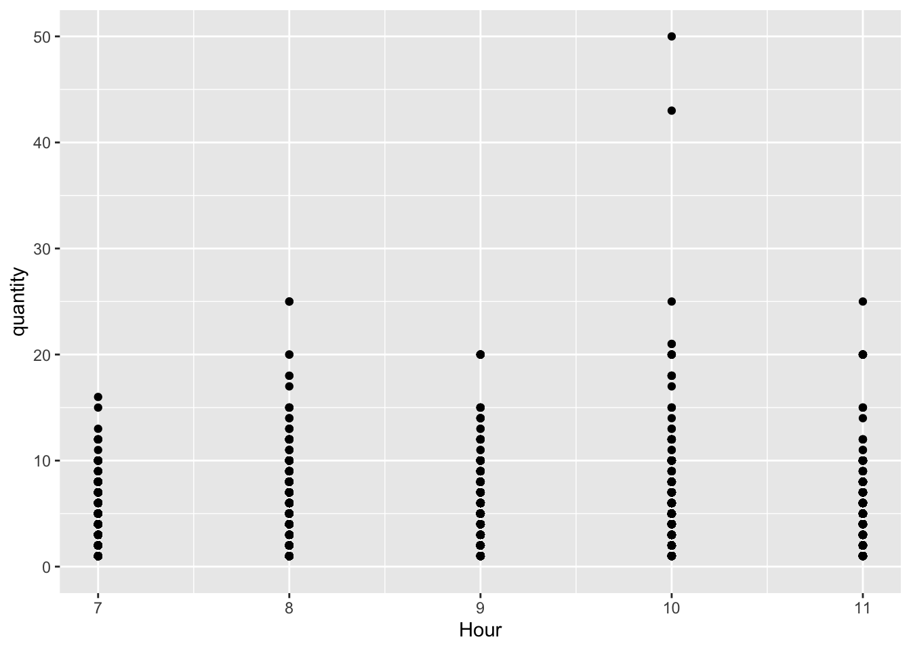
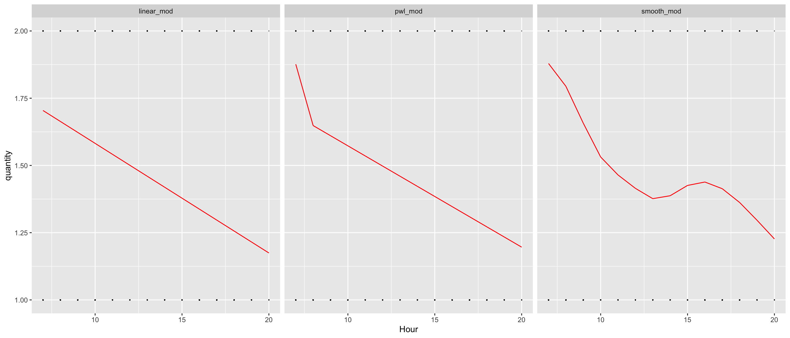
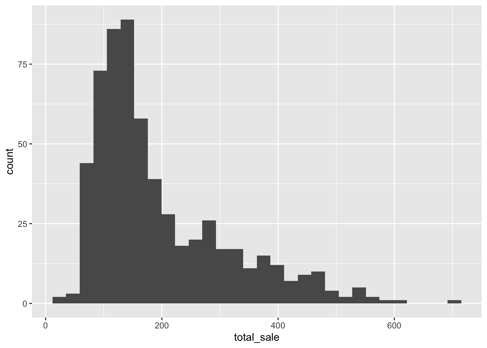
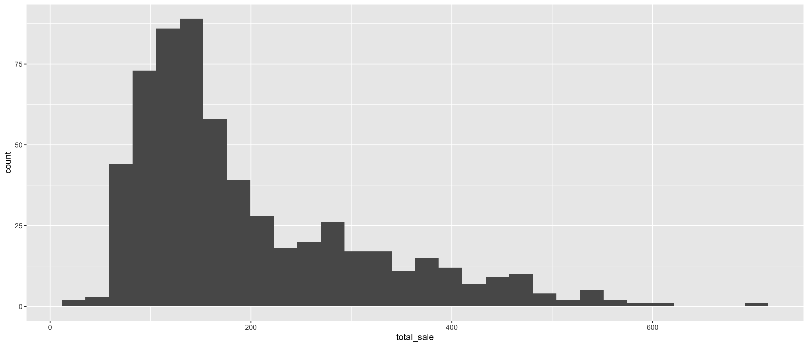
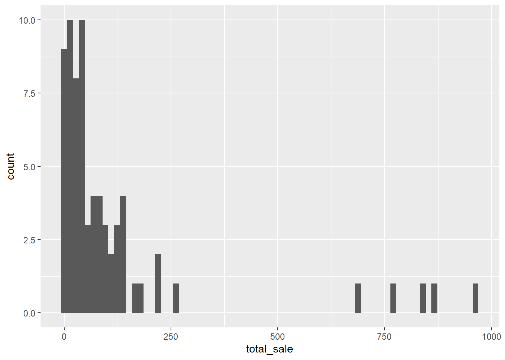

Statistical Analyses
knitr::opts_chunk$set(message = FALSE)
library(tidyverse)
library(lubridate)
library(plotly)
library(mgcv)## Loading required package: nlme##
## Attaching package: 'nlme'## The following object is masked from 'package:forecast':
##
## getResponse## The following object is masked from 'package:dplyr':
##
## collapse## This is mgcv 1.8-41. For overview type 'help("mgcv-package")'.library(moments)
library(modelr)Data input and cleaning
bakery_df =
read_csv("./Data/Bakery_sales.csv") %>%
janitor::clean_names() %>%
mutate(
unit_price = str_replace(unit_price, "€", ""),
unit_price = str_replace(unit_price, ",", "."),
unit_price = as.numeric(unit_price),
product_name = article,
rev = quantity * unit_price
) %>%
filter(product_name != ".") %>%
select(-article)
bakery_df## # A tibble: 234,000 × 8
## x1 date time ticket_number quantity unit_price product_name rev
## <dbl> <date> <time> <dbl> <dbl> <dbl> <chr> <dbl>
## 1 0 2021-01-02 08:38 150040 1 0.9 BAGUETTE 0.9
## 2 1 2021-01-02 08:38 150040 3 1.2 PAIN AU CHOC… 3.6
## 3 4 2021-01-02 09:14 150041 2 1.2 PAIN AU CHOC… 2.4
## 4 5 2021-01-02 09:14 150041 1 1.15 PAIN 1.15
## 5 8 2021-01-02 09:25 150042 5 1.2 TRADITIONAL … 6
## 6 11 2021-01-02 09:25 150043 2 0.9 BAGUETTE 1.8
## 7 12 2021-01-02 09:25 150043 3 1.1 CROISSANT 3.3
## 8 15 2021-01-02 09:27 150044 1 1.05 BANETTE 1.05
## 9 18 2021-01-02 09:32 150045 3 1.2 TRADITIONAL … 3.6
## 10 19 2021-01-02 09:32 150045 6 1.1 CROISSANT 6.6
## # … with 233,990 more rowsANOVA
ANOVA tests whether there is a difference in means of the groups at each level (each individual month) of the independent variable.
One way anova test can test if the mean sales of quarter 1 (Jan - Mar) is different from the mean sales of quarter 3 (Jun - Aug).
The null hypothesis is that there is no difference in the mean sales
of 1st quarter and 3rd quarter.
The alternative hypothesis is that the means are different from one
another.
anova_df =
bakery_df %>%
mutate(
year = year(date),
month = month(date)
)
third_sales =
anova_df %>%
filter((month == 6)|(month == 7)|(month == 8)) %>%
group_by(year, month) %>%
summarize(third_sales = n()) %>%
group_by(year, month) %>%
mutate(ID = cur_group_id())
first_sales =
anova_df %>%
filter((month == 1) |(month == 2)|(month == 3)) %>%
group_by(year, month) %>%
summarize(first_sales = n()) %>%
group_by(year, month) %>%
mutate(ID = cur_group_id())
anova_test_df =
left_join(third_sales, first_sales, by = c("ID"))
anova_test_df## # A tibble: 6 × 7
## year.x month.x third_sales ID year.y month.y first_sales
## <dbl> <dbl> <int> <int> <dbl> <dbl> <int>
## 1 2021 6 10856 1 2021 1 6562
## 2 2021 7 17592 2 2021 2 7817
## 3 2021 8 20344 3 2021 3 9233
## 4 2022 6 10678 4 2022 1 6273
## 5 2022 7 18242 5 2022 2 7795
## 6 2022 8 20135 6 2022 3 8251one.way <- aov(first_sales ~ third_sales, data = anova_test_df)
summary(one.way)## Df Sum Sq Mean Sq F value Pr(>F)
## third_sales 1 5350152 5350152 33.15 0.00451 **
## Residuals 4 645565 161391
## ---
## Signif. codes: 0 '***' 0.001 '**' 0.01 '*' 0.05 '.' 0.1 ' ' 1The ANOVA test p-value is 0.00451 which is less than alpha level of 0.05, so we reject the null hypothesis and conclude that the mean sales in quarter 1 is statistically significantly different from the mean sales of quarter 3.
Simple Linear Regression for croissant and test the model using Cross Validation
croissant_df =
bakery_df %>%
filter(str_detect(product_name, "CROISSANT")) %>%
mutate(
month = month(date),
qty_cp = (quantity > 5) * (quantity - 5)
)
ggplot(croissant_df, aes(x = quantity, y = rev)) +
geom_point()
croissant_reg = lm(rev ~ quantity, croissant_df)
croissant_reg %>%
broom::tidy()## # A tibble: 2 × 5
## term estimate std.error statistic p.value
## <chr> <dbl> <dbl> <dbl> <dbl>
## 1 (Intercept) 0.0863 0.00304 28.4 8.75e-172
## 2 quantity 1.12 0.00100 1121. 0Examine cross validation of this simple linear regression model
linear_mod = lm(rev ~ quantity, croissant_df)
pwl_mod = lm(rev ~ quantity + qty_cp, data = croissant_df)
smooth_mod = gam(rev ~ s(quantity), data = croissant_df)croissant_df %>%
gather_predictions(linear_mod, pwl_mod, smooth_mod) %>%
mutate(model = fct_inorder(model)) %>%
ggplot(aes(x = quantity, y = rev)) +
geom_point(alpha = .5) +
geom_line(aes(y = pred), color = "red") +
facet_grid(~model) The three models are very similar.
Re-sample the dataset by crossv_mc and let’s see the
rmse of each model
set.seed(2022)
cv_df =
crossv_mc(croissant_df, 100) %>%
mutate(
train = map(train, as_tibble),
test = map(test, as_tibble))
cv_df =
cv_df %>%
mutate(
linear_mod = map(train, ~lm(rev ~ quantity, data = .x)),
pwl_mod = map(train, ~lm(rev ~ quantity + qty_cp, data = .x)),
smooth_mod = map(train, ~gam(rev ~ s(quantity), data = as_tibble(.x)))) %>%
mutate(
rmse_linear = map2_dbl(linear_mod, test, ~rmse(model = .x, data = .y)),
rmse_pwl = map2_dbl(pwl_mod, test, ~rmse(model = .x, data = .y)),
rmse_smooth = map2_dbl(smooth_mod, test, ~rmse(model = .x, data = .y)))Then plot the rmse graph
cv_df %>%
select(starts_with("rmse")) %>%
pivot_longer(
everything(),
names_to = "model",
values_to = "rmse",
names_prefix = "rmse_") %>%
mutate(model = fct_inorder(model)) %>%
ggplot(aes(x = model, y = rmse)) + geom_violin() Based on the results, there is a slightly improvement using piecewise linear model as it has a lower tail of rmse on the top. Since there are no significant difference between the three model including the non-linear smooth model, we can conclude that the basic linear model is clear enough to be accounted for this relationship in the product of croissant.
Multiple Linear Regression (test version)
We are interested in testing the relationship between the unit price
of a product and its quantity being sold. Considering that the sales of
bakery varies by month, so we included month in our model
as a confounder to be controlled.
Linear Regression check assumption Linear Regression for baguette
baguette_df =
bakery_df %>%
filter(str_detect(product_name, "BAGUETTE")) %>%
mutate(
month = month(date)
)
baguette_reg = lm(rev ~ unit_price + quantity + month, baguette_df)
# Use backward elimination based on AIC to find a mlr model
baguette_model_2 = step(baguette_reg, direction = "backward")## Start: AIC=-331778.6
## rev ~ unit_price + quantity + month
##
## Df Sum of Sq RSS AIC
## <none> 2334 -331779
## - month 1 1 2335 -331742
## - unit_price 1 3987 6321 -241456
## - quantity 1 174518 176852 60583summary(baguette_model_2) %>% broom::tidy() %>% knitr::kable(digits = 3)| term | estimate | std.error | statistic | p.value |
|---|---|---|---|---|
| (Intercept) | -1.432 | 0.004 | -374.606 | 0 |
| unit_price | 1.207 | 0.003 | 393.521 | 0 |
| quantity | 1.188 | 0.000 | 2603.542 | 0 |
| month | 0.001 | 0.000 | 6.200 | 0 |
anova(baguette_model_2, baguette_reg)## Analysis of Variance Table
##
## Model 1: rev ~ unit_price + quantity + month
## Model 2: rev ~ unit_price + quantity + month
## Res.Df RSS Df Sum of Sq F Pr(>F)
## 1 90660 2334.1
## 2 90660 2334.1 0 0baguette_reg %>%
broom::tidy()## # A tibble: 4 × 5
## term estimate std.error statistic p.value
## <chr> <dbl> <dbl> <dbl> <dbl>
## 1 (Intercept) -1.43 0.00382 -375. 0
## 2 unit_price 1.21 0.00307 394. 0
## 3 quantity 1.19 0.000456 2604. 0
## 4 month 0.00119 0.000193 6.20 5.69e-10Examine assumptions for the chosen Linear Regression model
par(mfrow = c(2, 2))
plot(baguette_reg)
One-sample T-test
Regular Baguette (Two-sided)
We are interested in testing if the mean price of regular baguette in this bakery is significantly different from the average price for a baguette in Paris, which is 1.07 euros.
Null hypothesis: The mean price of baguette in this bakery is the same as the average price of baguette in Paris.
Alternative hypothesis: The mean price of baguette in this bakery is different from the average price of baguette in Paris.
bakery_df %>%
filter(product_name == "TRADITIONAL BAGUETTE") %>%
group_by(date) %>%
summarize(total_sale = sum(quantity)) %>%
ggplot(aes(x = total_sale)) +
geom_histogram()
baguette_onet =
bakery_df %>%
filter(product_name == "BAGUETTE") %>%
select(unit_price)
baguette_t_results =
t.test(baguette_onet, mu = 1.07 , alternative = "two.sided") %>%
broom::tidy()The p-value is much smaller than the alpha (0.05), so we would reject the null hypothesis. At 5% level of significance, we have sufficient evidence to conclude that the mean price of baguette in this bakery is significantly different from the average price of baguette in Paris.
Traditional Baguette (One-sided)
We noticed that the price of traditional baguette in this bakery is higher than the average price of traditional baguette in France. The price of the traditional French loaf is around 0.90 Euros in bakeries. Therefore, we would like to conduct a one-sided T-test to see if the price difference is significant.
Null hypothesis: The mean price of traditional baguette in this bakery is the same as the average price of traditional baguette in France.
Alternative hypothesis: The mean price of traditional baguette in this bakery is higher than the average price of traditional baguette in France.
bakery_df %>%
filter(product_name == "TRADITIONAL BAGUETTE") %>%
count(unit_price)## # A tibble: 3 × 2
## unit_price n
## <dbl> <int>
## 1 1.2 39426
## 2 1.25 13059
## 3 1.3 15204trad_baguette_onet =
bakery_df %>%
filter(product_name == "TRADITIONAL BAGUETTE") %>%
select(unit_price)
trad_baguette_t_results =
t.test(trad_baguette_onet, mu = 0.90, alternative = "greater") %>%
broom::tidy()The p-value is much smaller than the alpha (0.05), so we would reject the null hypothesis. At 5% level of significance, we have sufficient evidence to conclude that the mean price of traditional baguette in this bakery is significantly higher than the average price of baguette in Paris.
Generalized Additive Model
Find the rush hours of a typical day:
bakery_df =
bakery_df %>%
mutate(
Hour = hour(time),
Month = month(date))
bakery_df %>%
group_by(Hour) %>%
count() %>%
ggplot(aes(x = Hour, y = n)) +
geom_point() +
geom_line() +
scale_x_continuous(breaks = seq(7, 20), limit = c(7, 20)) +
scale_y_continuous(limit = c(0,50000)) +
labs(
title = "Peak hours",
x = "Hour (24-hour format)",
y = "Number of times appeared")
Overall, what hours has the most number of products sold?
bakery_df %>%
mutate(year = year(date)) %>%
filter(year == 2021) %>%
group_by(Hour) %>%
summarize(
n_sold = sum(quantity) / 365) %>%
ggplot(aes(x = Hour, y = n_sold)) +
geom_point() +
geom_line() +
scale_x_continuous(breaks = seq(7, 20), limit = c(7, 20)) +
scale_y_continuous(limit = c(0,120)) +
labs(
title = "Peak hours",
x = "Hour (24-hour format)",
y = "Number of products sold")
smooth_mod = gam(quantity ~ s(Hour) + s(Month), data = bakery_df)
smooth_mod %>% broom::tidy()## # A tibble: 2 × 5
## term edf ref.df statistic p.value
## <chr> <dbl> <dbl> <dbl> <dbl>
## 1 s(Hour) 6.89 7.78 347. 0
## 2 s(Month) 8.89 9.00 46.6 0bakery_df %>%
mutate(
month = month(date),
year = year(date)) %>%
filter(month == 2 & year == 2021) %>%
group_by(product_name) %>%
summarize(total_sale = sum(quantity)) %>%
filter(total_sale < 1000) %>%
ggplot(aes(x = total_sale)) +
geom_histogram(bins = 71)
skew =
bakery_df %>%
group_by(date) %>%
summarize(total_sale = sum(quantity))
# Skewness test
print(skewness(skew))## date total_sale
## -0.01517941 1.20058066